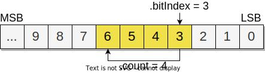

BITFIELD
Description
Manages accesses and writes to a bitfield stored in an already allocated
buffer of uint32_t elements. A BITFIELD instance should
manage its unique buffer. Each uint32_t in the buffer will give 32
unique bits. Bits are indexed from the least significant bit starting at
zero. For example, the first uint32_t in the buffer will hold bits
0 to 31, the second uint32_t will hold bits 32 to 63 and so on.
There are two modes of operation with their own set of functions:
- Single bit
Individual bits are set and get by their
BitIndex.- Bit range (multibit values)
An array of
BITFIELD_RANGEis passed toBITFIELD_Init(). Theuint32_tbuffer will hold bit ranges; bits grouped as specified by elements on aBITFIELD_RANGEarray. Each range element is indexed on that array by aRangeIndex.
Note
It is OK to define a BITFIELD_RANGE array with ranges
starting at some arbitrary bitIndex, then managing the bits below
as single bits. An actual framework use case stores a gamepad’s
state with several digital switches as single bits and additional
analog inputs like sticks and accelerometers as bit ranges
according to the required resolution.
Design and development status
Feature-complete.
Changelog
Version |
Date* |
Author |
Comment |
|---|---|---|---|
1.0.0 |
2022.9.7 |
sgermino |
Initial release. |
* Date format is Year.Month.Day.
API reference
-
type BITFIELD_Index
Data type that stores a
BitIndexor aRangeIndex. On aBitIndex, it allows a maximum of 65536 bit indices stored in 65536/32 = 2048uint32_tbuffer elements. On aRangeIndex, it allows a maximum indexing of 65536 ranges.
-
BITFIELD_INDEX_MAX
Maximum value represented in a
BITFIELD_Index.
-
struct BITFIELD_RANGE
Defines a single bit range by giving a first bit index and the number of additional bits in the range. For example,
BITFIELD_RANGE.bitIndex= 3 andBITFIELD_RANGE.count= 4 will define a range of four bits from bit 3 to bit 6 as follows:Note
Valid bit ranges do not span across
uint32_tbuffer elements. For example,BITFIELD_RANGE.bitIndex= 30 andBITFIELD_RANGE.count= 3 is an invalid bit range since bit 32 lies on the next buffer element.-
BITFIELD_Index bitIndex
bit index of the least significant bit in the range.
-
uint16_t count
Number of additional bits in the range.
Note
The maximum number of bits in a bit range is 32. The
uint16_tdata type is used for struct padding.
-
BITFIELD_Index bitIndex
-
struct BITFIELD
The user should treat this as an opaque structure. No member should be directly accessed or modified.
-
BITFIELD_RANGE_MAX_COUNT
The maximum number of bits in a bit range.
-
void BITFIELD_Init(struct BITFIELD *const B, uint32_t *const Buffer, const uint16_t Capacity, const struct BITFIELD_RANGE *const Range, const uint16_t RangeCount)
Initialize a
BITFIELDinstance.- Parameters
Buffer – An already allocated
uint32_tbuffer.Capacity – Buffer capacity, in
uint32_telements.Range – Pointer to an array of
BITFIELD_RANGEdefining bit ranges. TheBITFIELDinstance will be initialized in bit range mode. This function asserts valid ranges. To initialize theBITFIELDinstance as single bit addressing mode only, set this parameter toNULL.RangeCount – Number of elements in the array of
BITFIELD_RANGEpassed as therangeparameter. ifrangeis set toNULL, then this parameter must be zero.
-
void BITFIELD_SetBit(struct BITFIELD *const B, const BITFIELD_Index BitIndex, const _Bool State)
Set a single bit state by its
BitIndex.- Parameters
BitIndex – The bit position, from the least significant bit starting at zero. A bit number larger than a
uint32_t(for example, 32, 74, etc) will fit on the appropiate element index in theuint32_tbuffer. This function asserts the condition of sufficient buffer elements for a givenBitIndex.State – New bit state, either
trueorfalse.
-
uint32_t BITFIELD_GetBit(struct BITFIELD *const B, const BITFIELD_Index BitIndex)
Get a single bit state by its
BitIndex.- Parameters
BitIndex – The bit position, from the least significant bit starting at zero. A bit number larger than a
uint32_t(for example, 32, 74, etc) will fit on the appropiate element index in theuint32_tbuffer. This function asserts the condition of sufficient buffer elements for a givenBitIndex.
- Returns
Current bit state as positioned in the corresponding
uint32_tbuffer element.
-
void BITFIELD_SetRangeValue(struct BITFIELD *const B, const BITFIELD_Index RangeIndex, const uint32_t Value)
Set the bit range value of a given
RangeIndex. Do not use this function onBITFIELDinstances initialized as Single bit mode; this condition is asserted.- Parameters
RangeIndex – Index in the array of
BITFIELD_RANGEwith the bit range value to update.Value – New value to set in the specified bit range. Should not be higher than the maximum number allowed by the bit count in the range; this condition is asserted.
-
uint32_t BITFIELD_GetRangeValue(struct BITFIELD *const B, const BITFIELD_Index RangeIndex)
Get the bit range value of a given
RangeIndex. Do not use this function onBITFIELDinstances initialized as Single bit mode; this condition is asserted.- Parameters
RangeIndex – Index in the array of
BITFIELD_RANGEwith the bit range value to retrieve.
- Returns
Current value of the specified bit range.